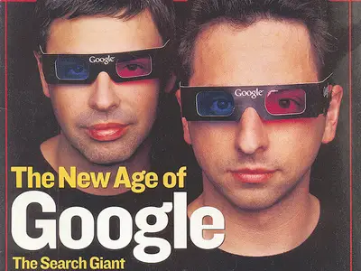
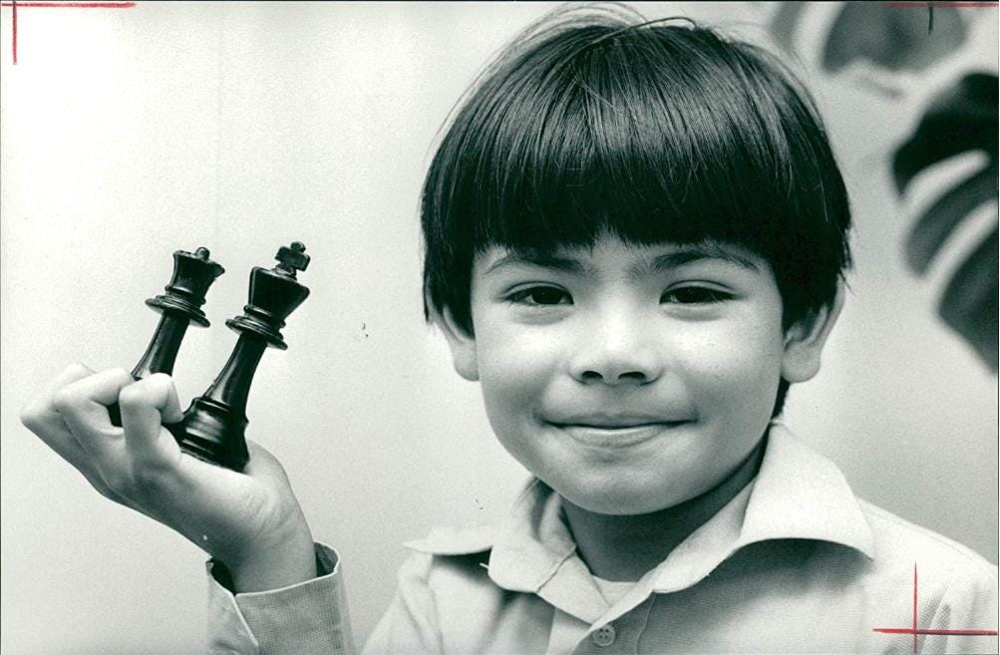
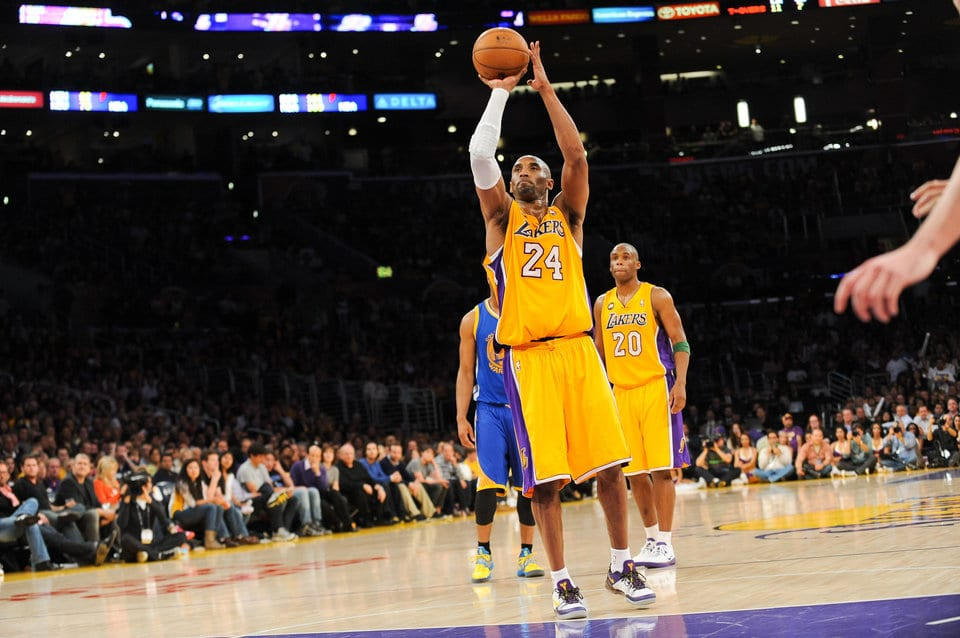
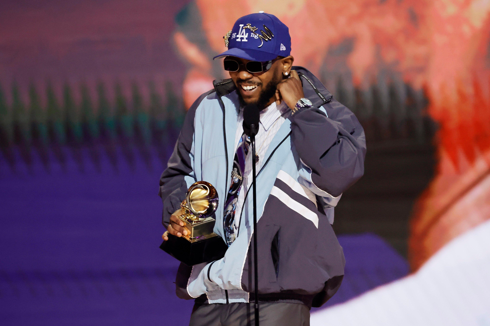
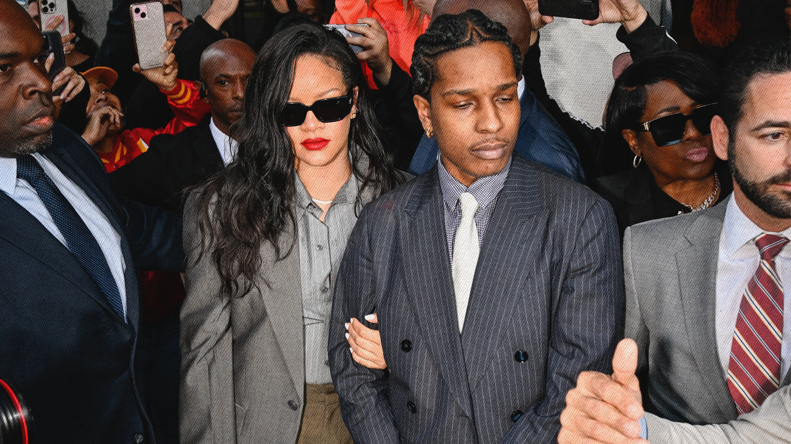

영감
오늘 포스팅은 이전 포스팅과는 좀 다를 것 같습니다. 내 텔레그램 채널이나 소셜 미디어에 공유하지 않을 것입니다. 나는 단지 나 자신을 위해 이 글을 쓰고 싶다.
영감을 받을 수 있는 훌륭한 사람들이 많이 있습니다. 예를 들어 크리스티아누, 아인슈타인, 뉴턴, 타이슨, 무하마드 알리, 마이클 조던, 마이클 펠프스, 페더러, 메시 등이 있습니다. 오늘 저는 제 영감과 그것이 제게 영감을 준 이유에 대해 쓰고 싶습니다. 매우 다양한 분야의 다양한 사람들이 섞여 있을 것입니다.
래리 & 세르게이
기술이나 기업가 정신에 관심이 있는 사람이라면 래리 페이지(Larry Page)와 세르게이 브린(Sergei Brin)의 영향력, 혁신, 판도를 바꾸는 탁월함을 알지 못할 수 없다고 생각합니다. 엘론 머스크(Elon Musk), 샘 알트만(Sam Altman), 주커버그(Zuckerberg)와는 달리, 그들에 대해 제가 매력을 느끼는 점은 그들이 아카데미를 철저하게 추구했고 아카데미를 통해 기업가 정신을 시작했다는 것입니다. 이전 세 사람은 탁월한 기업가였으며 Larry와 Sergei는 해당 분야에 대한 풍부한 지식을 갖고 있었습니다. 저는 Eric Schmidt의 두 인터뷰와 팟캐스트에서 두 사람이 얼마나 가차 없고 완고하며 결단력 있고 자유주의적인지에 대해 이야기하는 것을 보았습니다. 게다가 다른 기술 덕후들에 비해 그들은 자선 활동, 사람들 돕기, 선행에 꽤 많은 돈을 썼기 때문에 제가 좋아하는 섬인 요트에 돈을 썼습니다. 기술 전문가가 되고 즐길 만한 물건을 사지 않는 것은 내 일이 아닙니다. 사람들은 즐기고 싶다면 사치품이나 거대한 물건에 돈을 써야 합니다.
많은 사람들이 Google의 Larry와 Sergey를 알고 있지만 Android, YouTube 인수 및 Play 스토어 출시에 대한 그들의 탁월함에 감탄합니다. 그들은 시장 격차를 파악하고 적시에 정확하게 메우는 비전가였습니다. 물론 Google+, YouTube Go 등 실패도 있었지만 성공적인 벤처는 이러한 실수보다 훨씬 컸습니다. 앞서 말했듯이 이들의 기술적 우수성은 타의 추종을 불허하지만, 이들의 기업가적 지능도 간과해서는 안 됩니다. 예를 들어, Eric Schmidt를 CEO로 고용한 것은 대담하고 전략적인 움직임이었습니다. 완전한 통제권을 보유한 다른 기업가(Zuckerberg, Musk 또는 Altman)와는 달리 Larry와 Sergey는 경험이 풍부한 리더십을 도입하고 그들로부터 배우고 성장하고 결국에는 고삐를 되찾는 데 개방적이었습니다. 그것들은 내가 새로운 아이디어에 열려 있고, 내 분야에서 탁월하며, 내가 승리를 축하하는 만큼 실패를 포용하도록 영감을 줍니다. 나는 그들만큼 뛰어난 사람이 되기 위해 끊임없이 노력합니다.

데미스 허사비스
Demis Hassabis를 발견한 지 얼마 되지 않았습니다. 알파고 다큐멘터리를 통해 처음 알게 됐고, 이후 조사도 좀 했어요. 그는 신동이었고 체스 챔피언이었고 케임브리지를 졸업하고 UCL에서 박사 학위를 취득했으며 심지어 노벨상도 수상했습니다. 그는 정말 천재이고 뛰어난 사람이다. 학계와 산업계 모두에서 많은 성과를 거두었음에도 불구하고 그는 여전히 겸손하고, 기반이 있고, 친절했습니다. 그가 출연한 인터뷰와 팟캐스트에서 이를 확인할 수 있습니다. 그는 미디어, 정치, 명성에서 벗어나 자신의 일에 집중하고 영향력을 확대하며 다른 사람들을 돕는 위대한 마음 중 하나입니다. 나는 그와 그의 회사, 그의 혁신에 관한 소식을 좋아하고 정기적으로 팔로우합니다. 그는 재능, 노력, 위험을 감수하는 능력, 산업계와 학계의 교차점으로 나에게 영감을 줍니다. 언젠가 그 사람과 그의 회사에서 일할 수 있는 영광과 기회를 얻게 되기를 바랍니다.

코비 브라이언트
나는 스포츠의 엄청난 팬이고, 레오 메시(Leo Messi), 네이마르(Neymar), 티에리 앙리(Thierry Henry) 등 많은 위대한 운동선수들을 존경하지만, 스포츠계에서 나보다 코비 브라이언트(Kobe Bryant)보다 앞선 사람은 없습니다. 아쉽게도 정보 노출의 한계와 나이 때문에 저는 그분이 돌아가신 후에야 그를 발견하게 되었습니다. 고베는 노력, 헌신, 집중력, 성격, 카리스마 측면에서 엄청난 영감을 주었습니다. 나는 그의 인터뷰, 다큐멘터리, 그리고 그에 대한 다른 유명인의 댓글을 좋아합니다. 그는 위대함을 위해 헌신하고 그것을 달성하여 예외적이고 독특한 인물이 되었습니다. 그의 노고, 집중력, 헌신, 일관성, 친절함, 겸손, 지혜는 제가 극도의 자신감을 갖고, 내 분야에서 탁월함을 위해 노력하고, 그처럼 남다르고 끈질기게 행동하도록 깊은 영감을 줍니다. 나는 그의 위대함과 헌신에 계속해서 감사하고 있으며 내 여행에서 그러한 자질을 모방하기 위해 최선을 다합니다.

카니예 웨스트
면책조항: 나는 그의 모든 사회정치적 견해에 동의하지 않습니다.
Kendrick, ASAP Rocky, Drake 및 Tyler를 혼합하면 무엇을 얻게 되나요? 당신은 Kanye를 얻습니다. 그는 역사상 가장 위대하고 판도를 바꾸는 선견지명이 있고 개방적인 예술가 중 한 명이었습니다. 힙합, 독특한 비트, 바, 탁월한 음악에 대한 그의 혁신적인 접근 방식은 복제할 수 있는 사람이 거의 없습니다. Kanye는 의심할 여지없이 위대한 인물 중 하나입니다.
하지만 그의 탁월함은 음악에만 국한되지 않았습니다. 그는 남다른 개성과 카리스마, 아우라를 갖고 있을 뿐만 아니라 디자인, 스타일, 패션에 있어서 남다른 취향을 갖고 있었다. 기업가로서 그는 부츠, 신발, 상징적인 운동화로 운동화와 패션 산업에 혁명을 일으켰습니다. 음악과 디자인 모두에서 그의 영향력, 비전, 위대함을 부인할 수 없습니다.
불행하게도 그의 정신 건강 문제는 심각한 논란을 불러일으켰습니다. 그럼에도 불구하고 나는 그의 예술과 디자인에 대한 뛰어난 솜씨를 계속 존경하고 있으며, 매번 그의 작품에서 영감을 얻습니다. Kanye는 내가 탁월해지고, 나 자신과 무엇이든 성취할 수 있는 나의 능력을 믿고, 내 분야 안팎에서 새로운 것을 실험하고, 독특한 스타일과 비전을 개발하도록 영감을 줍니다. 예전 칸예가 그리워요.
켄드릭
세상을 바꾸고 싶었지만 자신만 바꿀 수 있다는 것을 깨달은 미친 도시의 갱단 소속 착한 아이인 컴튼 출신의 남자. Kendrick은 나에게 군중을 따르지 말고, 멈추고, 비판적으로 생각하고, 나 자신을 변화시키도록 영감을 주었습니다. 그는 나에게 편안함에 빠지지 말고 개방적이고 연약하며 내 경험에 대해 솔직하게 가르칩니다. 그는 나에게 기술을 연마하고 결코 멈추지 않고, 열린 마음을 유지하고, 진실을 받아들이고, 끊임없이 추구하도록 강요합니다. 내 생각엔 Kendrick이 왜 대단한지 설명이 필요하지 않을 것 같아요. 대신, 나는 모든 것을 말해주는 그의 바 중 일부를 공유하고 싶습니다.
시카고에서의 셋째 날 밤에 그녀를 만났어요
북미 투어, 나의 영토
Fee-fi-fo-fum, 그녀는 모델이었어
내가 쓴 노래와 성경에 바칩니다.
녹색 같은 눈은 달빛을 꿰뚫고 있어
묶은 머리, 방 안의 에너지는 마치
이론상 빅뱅, 맙소사, 내 말을 들었으면 좋겠어
벨소리를 끄고 전화해, 내가 바쁘다고 세상에 말해
당연하지, 녹색 눈은 그녀의 어머니가 충분히 신경 쓰지 않는다고 말했어
그녀의 아빠가 체인 갱단에 있을 때 동정심을 가지세요
그녀의 첫째 남동생은 살해당했습니다. 그는 21살이었습니다
Lamont를 무덤에 넣었을 때 난 9살이었어
에스텔이 작별인사를 하지 않아 상심함
Chad는 FaceTime을 한 후 시체를 떠났습니다.
녹색 눈은 괜찮을 거라고 말했어, 첫 번째 투어, 고통을 없애기 위해 섹스를 해
###
거짓 깃발을 벗어라
인식을 벗어라
안대 낀 경찰을 벗겨버려 (그거 벗어)
불충실한 것을 벗어버리세요
불확실한 것을 벗어라
나에게 부족한 결정은 떼어내세요 (빼내세요)
가짜 깊은 것을 벗어라
가짜 잠을 벗어라
벗어봐 난 가난해, 상관없어 (벗어)
가십을 벗어라
부자라면 희귀하다는 새로운 논리를 벗어라 (벗어라)
샤넬을 벗어라
돌체를 벗어라
버킨백을 벗어 (벗어)
그 디자이너의 헛소리는 다 없애버려
그리고 당신은 무엇을 가지고 있습니까? (암캐)
###
아빠 문제가 있어, 그건 내 책임이야
"사랑해"를 찾고 있지만 내 안도감을 좀처럼 공감하지 못해요
익숙해진 아이, 무릎 긁으면 펄쩍펄쩍 뛰는 아이
내가 그것에 대해 울면 그 사람은 분명 나한테 약해지지 말라고 할 테니까.
아빠 문제, 내 감정을 숨기고 내 자신을 표현하지 않았어
남자는 절대 감정을 보여서는 안 되고, 예민한 것도 도움이 안 됐어요
그 사람 엄마가 돌아가셨는데, 왜 그렇게 빨리 직장에 복귀하는지 물었지?
그의 첫 번째 대답은 "아들아, 그게 인생이고 청구서에는 은수저가 없어"였다.
아빠 문제야, 모두 엿먹어, 가서 돈을 벌어라, 아들아
자신을 보호하세요. 아무도 믿지 마세요. 오직 네 엄마만 믿으세요.
이로 인해 관계가 흐릿해 보이고 누구에게도 애착을 갖지 않는 것처럼 보였습니다.
그러니 네가 내 주변을 좋아한다면 나는 그 사랑을 거부할지도 모른다.
아빠 문제가 날 경쟁력 있게 만들었어, 그건 사실이야, 임마
무슨 이야기인지는 신경 안 써, 내가 그 새끼야
###
엄마와 그들이 떠나는 이유가 너 때문이야?
아니 넌 별거 아니야, 넌 그 사람들을 사랑한다고 말하지만, 진심이 아닌 건 알아
네가 무책임하고, 이기적이고, 부정하고, 어쩔 수 없다는 걸 알아
너의 시련과 고난은 부담이야 모두가 느꼈지
모두들 그걸 들었어, 여러 발의 총소리, 구석에서 비명이 터져나왔어
당신은 버려졌습니다. 안테나는 또 어디에 있었나요?
당신의 존재는 어디에 있었고, 당신이 가장했던 당신의 지지는 어디에 있었습니까?
넌 형제도 아니고, 제자도 아니고, 친구도 아니야
친구는 결코 이익을 위해 Compton을 떠나거나 가장 친한 친구를 떠나지 않습니다.
동생아, 총에 맞기 전에 지켜보기로 약속했잖아
네 안테나는 어디 있었어, 길 위, 술병과 년들
넌 딱 한 번 시간을 겪었어, 그건 용서할 수 없는 일이야
병원 방문 대신 시간을 보내기도 했어
그 사람이 회복할 거라고 생각했어야 했는데, 글쎄요.
수술은 진짜 출혈을 멈출 수 없었어요
그러다가 그는 죽었고, 신께서 친히 "너는 망할 실패했어"라고 말씀하실 겁니다.
당신은 시도하지 않습니다
난 네 비밀을 알아 새끼야
기분 변화가 자주 일어나잖아 새끼야
우울증이 네 마음을 사로잡는 데는 두 가지 이유가 있다는 걸 알아 임마
나도 알아 너랑 동네 남자 몇 명이 말을 안 했다고 새끼야
너네들 거의 싸움질 직전이야, 나도 봤어, 그리고 너가 이유야 새끼야
그리고 이 병이 *꿀꺽* 말을 할 수 있다면 나는 울다가 잠이 든다
개년아 다 네 잘못이야

A$AP 록키
Jay-Z는 '내 아내의 비욘세, 나는 다른 모습을 보인다'고 말한 적이 있습니다. 이는 우리 세대의 A$AP Rocky에 쉽게 적용될 수 있습니다. 그의 음악적 위대함 외에도 그의 드립, 의상, 독특한 스타일 감각을 강조하고 싶습니다. 그의 창의성, 개성, 그리고 뮤직비디오에서의 탁월한 존재감은 그를 돋보이게 했습니다. 인생의 어느 시점에서 그는 노숙자였지만 지금은 힙합 커뮤니티 내에서 패션계를 결정짓는 영향력이 있습니다. Rocky는 힙합과 패션 분야에서 자신만의 목소리와 스타일, 위대함을 만들어낸 사람입니다.
그의 드립은 단순한 옷 그 이상입니다. 그것은 자신감의 표현이자 자기 표현의 구체화입니다. 고급 브랜드를 선보이던, 자신만의 브랜드를 창조하던 그는 스트리트웨어와 럭셔리 패션을 자연스럽게 결합하여 스타일을 수월하면서도 고상하게 만드는 트렌드세터입니다. 그는 제가 결코 희망을 잃지 않고, 계속해서 기술을 연마하고, 항상 탁월함을 추구하도록 영감을 주었습니다. 언젠가는 그가 그 사람처럼 카리스마 있고 나 자신의 스타일도 독특할 수 있기를 바랍니다. 로키, 하루 종일, 매일.

이것이 나의 영감입니다. Larry, Sergey, Demis에게서 영감을 받은 것처럼 Kanye, Kendrick, Kobe, Rocky에게서도 영감을 받았습니다. 그들은 나에게 동기를 부여하고, 자신감을 갖고, 새로운 아이디어에 열려 있도록 해주고, 내가 꿈을 추구하기 위해 열심히 일하고, 탁월해지고, 위대함을 성취하도록 이끌어줍니다. 나는 그들 모두를 존경하고 그들 중 하나가 되기를 열망합니다.
한국 서울
07/03/2025